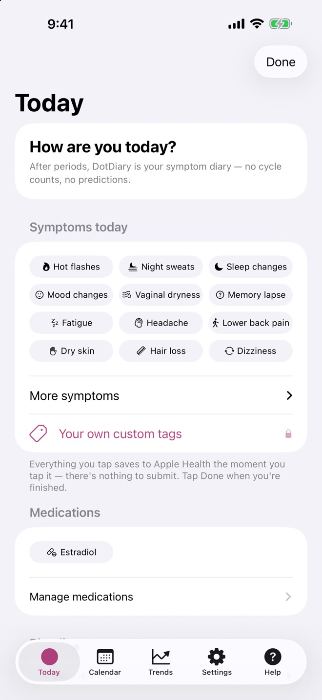
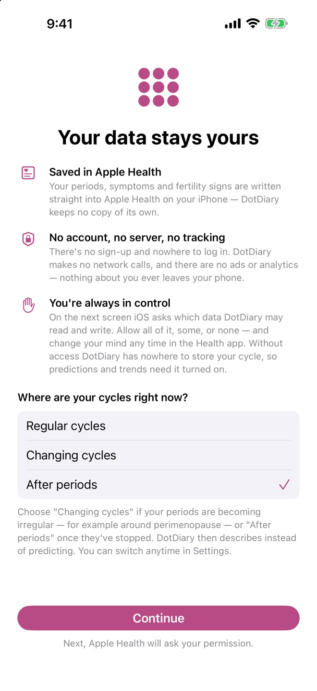
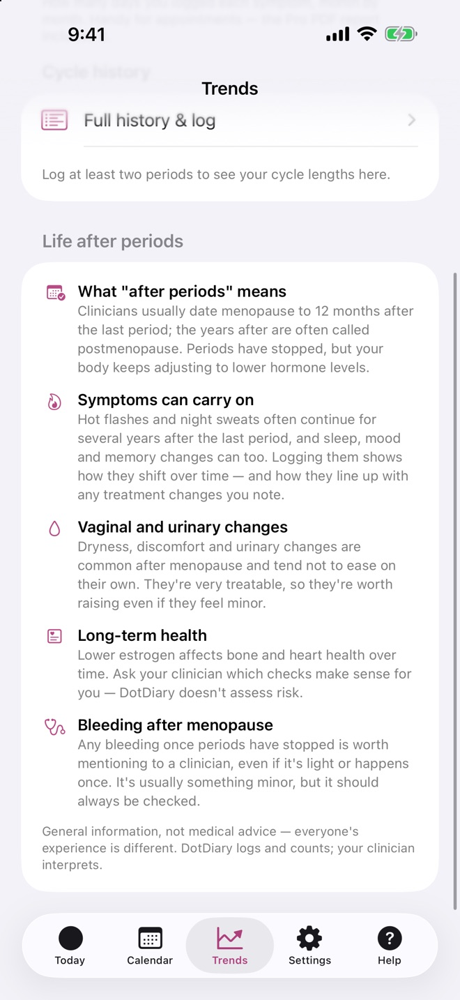

Log hot flashes, night sweats, sleep, mood and HRT in a couple of taps. Your entries stay on your iPhone, in Apple Health. No account, no tracking, no subscription.
For iPhone and iPad. Free to use · DotDiary Pro is a one-time purchase.

Most trackers assume your cycle is steady and predictable, and stop being useful when it isn't. DotDiary changes how it works when your body does. You choose the stage; the app never guesses it for you.
Two-tap period logging, a calendar, and next-period estimates with an honest confidence label. They widen when your cycles vary instead of disappearing.
When periods turn irregular, DotDiary stops predicting and starts describing: days since your last period, your recent cycle range, and month-by-month symptom counts. Hot flashes and night sweats come first.
Today becomes a symptom diary: no cycle counter, no predictions. Bleeding can still be logged, and DotDiary reminds you that it's worth mentioning to a clinician.

A hot flash arrives without warning, so logging one should take seconds.

Starting HRT or changing a dose? Record it once, then see your symptom counts before and after.
Doses are written in your own words. DotDiary never suggests, checks or interprets them.
Fast, discreet tools with nothing to sign up for.
Your existing Health history shows up on day one, and everything you log goes back into Apple Health.
Face ID lock, neutral app icons, an optional decoy screen, and widgets that never say "period".
Cycle-length history, symptom patterns by phase, and month-by-month symptom charts.
Import a CSV export and DotDiary writes it into your own Apple Health.
CSV with symptoms, tags and medications. It's your data, so you can take it with you.
Works on iPhone, iPad and the iPhone Duo, in English and French.
Menopause apps typically cost $40–80 a year and require an account. DotDiary is different by design.
| DotDiary | Typical menopause app | |
|---|---|---|
| Price | Free · Pro is one-time | $40–80 per year subscription |
| Account | None | Required |
| Where your data lives | Apple Health on your device | The company's servers |
| Ads & analytics | None, ever | Often third-party SDKs |
| Doctor report | Made on-device, works offline | Server-generated, if offered |
| Menopause stage | You choose it | Often "assessed" by an algorithm |
DotDiary has no servers and makes no network calls. Cycle and symptom entries go into Apple Health; notes, tags and your medication diary stay in the app on your device. Our App Store privacy label says "Data Not Collected", because nothing is.
No. It's a full period tracker for regular cycles too. The Changing cycles and After periods stages are there when you need them, and you can switch anytime in Settings.
No, on purpose. Only a clinician can tell you that. DotDiary records and counts what you log, and presents it clearly, so the conversation with your clinician is easier.
Logging, the calendar, all three stages, widgets and the medication diary are free. DotDiary Pro, a one-time purchase, adds the month-by-month symptom chart with medication markers, symptom patterns, the doctor PDF, custom tags, partner sharing and iCloud backup of notes.
Periods, symptoms and fertility signs: in Apple Health on your device. Notes, tags and medications: in protected files inside DotDiary on your device. Nothing is sent to us. We have no servers.
No. DotDiary is a diary. Estimates are for information only and must not be used for contraception or conception planning, and nothing in the app is medical advice.
Questions, ideas, or a bug to report? Email us. Please include your app version (shown in Settings); we never need anything from your diary.